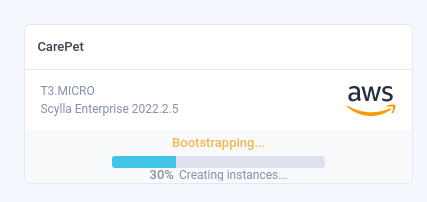

Was this page helpful?
Deploy in ScyllaDB Cloud with Terraform¶
ScyllaDB Cloud has a Terraform provider which means that you can spin up new ScyllaDB Cloud clusters easily using Terraform. Follow the instructions below to set up the care-pet sample application in a ScyllaDB Cloud environment using Terraform.
You’ll set up Terraform to:
Create a new ScyllaDB Cloud cluster (you need a ScyllaDB Cloud account)
Execute a CQL file that creates a new keyspace and tables for the care-pet project
Prerequisites¶
Get started¶
Clone the repository¶
Clone the repository if you haven’t already:
git clone https://github.com/scylladb/care-pet.git
Install CQLSH¶
Install the standalone CQLSH Python package:
pip install cqlsh
This package will be used to connect to ScyllaDB and create the initial schema.
Spin up a new ScyllaDB Cloud cluster¶
Go to the terraform directory and run terraform init
cd terraform/
terraform init
Apply the changes that are configured in the main.tf file:
terraform apply
You’ll be asked to provide your ScyllaDB Cloud API token (more info in docs):
var.scylla_api_token
Your own ScyllaDB Cloud API token
Enter a value:
You’ll also be asked if you want to perform the actions configured in Terraform, just type yes:
Do you want to perform these actions?
Terraform will perform the actions described above.
Only 'yes' will be accepted to approve.
Enter a value: yes
scylladbcloud_cluster.care_pet: Creating...
Spinning up the cluster takes about ~10 minutes. While the process is underway, you can go to your ScyllaDB Cloud dashboard and verify that the cluster is getting set up:

After the process is completed, go to the “Connect” tab in in the cloud console and connect to your newly created cluster with your favourite tool.